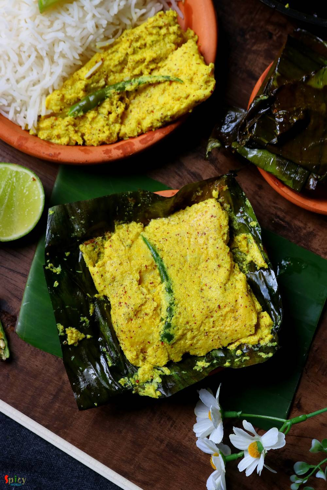

Simple and Easy Recipes
Fish paturi / Kolapatay Macher Paturi
© 2016 Spicy World, Published on: Jul 30, 2019
Fish paturi aka Macher Paturi is a traditional Bengali recipe in which any white fish fillet (bhetki or swai or basa is preferable) or shrimp or Hilsa is cooked by wrapping in banana leaf. The word 'Paturi' comes from the Bengali word Pata or Leaf. Almost any Bengali function or good old Bengali restaurant is incomplete without Paturi. You can either steam them or fry them. But I like the fried version. You will need the freshest quality of fish for this recipe. Do try this in your kitchen and let me know how it turned out for you.

Ingredients
- 2 thick fish fillets, cut into halves.
- 3 Tablespoons of black mustard seeds.
- 2 Tablespoons of yellow mustard seeds.
- 2 Tablespoons of poppy seeds.
- 2-3 Tablespoons of grated coconut.
- 4 green chilies.
- Salt and sugar as per your taste.
- 2 Tablespoons of yogurt.
- 1 Tablespoons of turmeric powder.
- 1/4th cup of mustard oil.
- 2 big banana leaves, cut into halves.
- 1/5th cup of water.


Steps
Soak the mustard seeds and poppy seeds in water for 2 hours.
Put them in grinder along with grated coconut, 2 green chilies and 1 Tablespoon of salt.
Grind to a thick and smooth paste.
In a bowl take out that paste then add turmeric powder, yogurt, sugar and some more salt. Mix well.
Then add the fish fillets, massage well with the marinade.
Then add the mustard oil. Mix well, cover the bowl and keep in refrigerator for 2-3 hours.
Cut the hard part of the banana leaves with a scissor. You can use them as a string or discard them if you are using kitchen thread.
Heat a pan on medium flame, then dry roast both sides of the leaves for 2 minutes.
In this way banana leaves will turn soft and you can easily fold them.
Place one leaf on a plate.
Put one fish in the center along with 2 Tablespoons of marinade.
Slit the remaining green chilies and put one half on top of the fish.
First fold the sides and then fold the upper and lower portion. It will become like an envelope.
If you are a beginner then use large sized leaf.
Tie the envelope with kitchen thread or that strings from leaf. Or you can secure them with toothpick also.
Heat 1 Tablespoon of mustard oil in a pan.
Place 2 or 3 envelopes at a time on hot pan, cover and cook on medium flame for 5 minutes.
Flip them to the other side and cook for 3 minutes on high flame.
They will release a nice aroma, then take them out from pan. After serving discard the thread or string, open the envelope and enjoy!
Your fish paturi is ready to serve.
Serve this hot with plain steamed rice ..
")